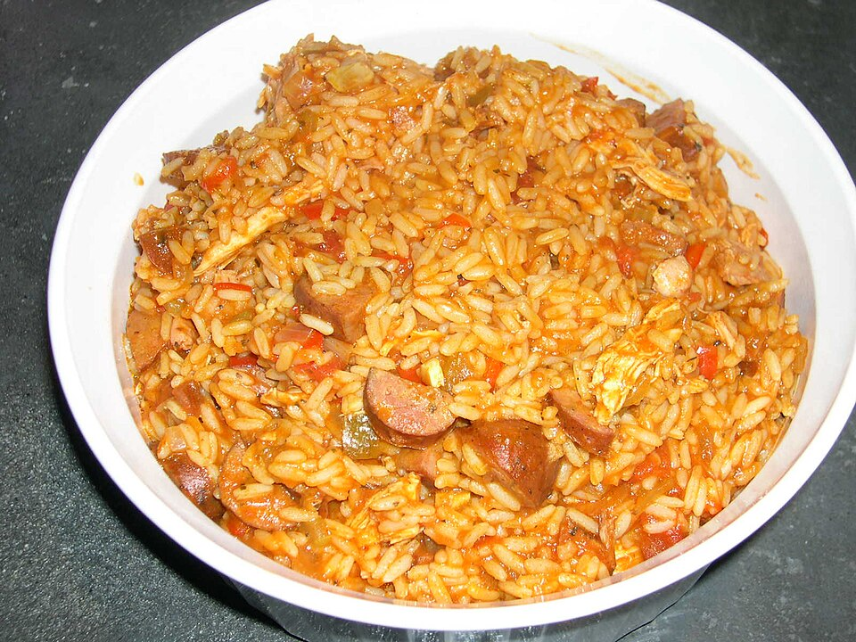

Home
Jambalaya

Wikimedia Commons
Attribution-ShareAlike 2.0 Generic No changes made.
A simple Jambalaya recipe
Ingredients
- Rice
- Sausage, sliced
- Onion, chopped
- Bell pepper, chopped
- Tomato paste
- Garlic, minced
- Sugar, pinch
Steps
- Cook two cups of rice in a seperate pot
- In a large pot over high heat, cook sliced sausage, onion, bell pepper, and garlic until onions brown stirring frequently
- Mix in tomato paste and a pinch of sugar
- Add water and stir until desired consistency. (should have some thickness, so add water slowly)
- Combine rice to mixture and stir well
- Serve with you choice of sides